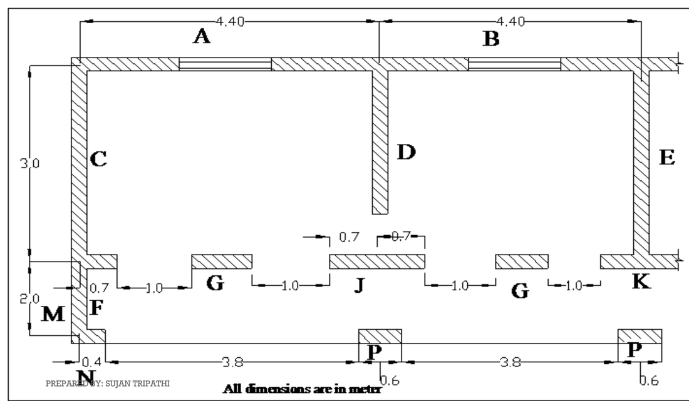

Paper Information
| Detail | Information |
|---|---|
| Exam | Regular, 2080 Bhadra |
| Subject | Seismic Resistant Design of Masonry Structure (Elective I) — CE 72502 |
| Level / Programme / Year–Part | BE / BCE / IV – I |
| Full Marks · Pass Marks · Time | 80 · 32 · 3 hours |
| Instructions | Attempt All questions. IS 1905–1987 codes are allowed. Assume suitable data if necessary. |
Question 1
1. Definition
2. Source of an earthquake
- Focus (hypocentre) — the point inside the earth where the rupture begins and from where the energy is first released. This is the source.
- Epicentre — the point on the ground surface vertically above the focus.
- Focal depth — vertical depth of the focus. Shallow < 70 km, intermediate 70–300 km, deep 300–700 km. About 90% of foci are shallower than 100 km.
- Fault — the fracture along which the two blocks move relative to each other.
- Mechanism — plate tectonics loads the fault; when the accumulated strain exceeds the strength of the rock the blocks rupture and “snap back” (elastic rebound theory), releasing the stored energy as seismic waves.
- Types by cause: tectonic (>90%), volcanic, collapse, explosion, reservoir-induced.
Draw a section showing focus, epicentre, fault plane, focal depth, epicentral distance and the radiating wave fronts.
3. Factors influencing the shaking at a location
Group them as source – path – site:
| Group | Factor | Effect |
|---|---|---|
| Source | Magnitude (energy released) | Larger magnitude → larger amplitude and longer duration. |
| Focal depth | Shallow focus → much stronger surface shaking for the same magnitude. | |
| Fault mechanism & rupture directivity | Thrust faults give large vertical components; shaking is amplified in the direction of rupture propagation. | |
| Length / area of rupture | Longer rupture → longer duration of strong shaking. | |
| Path | Epicentral / hypocentral distance | Amplitude attenuates rapidly with distance. |
| Geology along the travel path | Reflection and refraction change the amplitude and frequency content. | |
| Site | Local soil type and depth | Soft, deep, unconsolidated soil (e.g. Kathmandu Valley lake deposits) amplifies the shaking and lengthens its period; rock sites shake less. |
| Topography | Ridges and hill tops amplify base-rock acceleration by resonance (“ridge effect”). | |
| Basin geometry | Sediment-filled basins trap surface waves and prolong the shaking. | |
| Groundwater / liquefiable soil | Saturated loose sand may liquefy, changing the motion and causing settlement. | |
| Structure | Nature of the structure | Damage also depends on the building's own period, mass, stiffness, ductility, configuration and construction quality — resonance greatly increases the response. |
Part 1 — Failure mechanisms
Classification (seven-fold): (1) out-of-plane flexural / shear failure; (2) in-plane shear / flexural failure; (3) separation of walls at junctions; (4) failure of masonry piers between openings; (5) local failures (parapets, gables, chimneys); (6) buckling / delamination of walls; (7) separation of the roof from the walls.
(a) In-plane failure modes — four types
| Mode | Mechanism | When it occurs | Crack appearance |
|---|---|---|---|
| Rocking (flexural) | Horizontal crack opens at the heel; the pier rotates as a rigid block about its compressed toe. | Slender piers with low vertical load. | Horizontal cracks top and bottom; toe crushing. |
| Sliding | The wall slides horizontally along a bed joint. | Low vertical load, weak mortar; at base, sill or DPC. | Single horizontal crack with visible offset. |
| Diagonal shear — bed-joint sliding | The diagonal crack follows the mortar joints. | Weak mortar, strong units. | Stair-stepped diagonal crack, bricks intact. |
| Diagonal tension + toe crushing | Principal tension exceeds the tensile strength of the masonry; the crack runs through the units. Reversal gives two crossing cracks. | Strong mortar, weak units, high compression; squat piers. | Straight “X” crack cutting through the bricks. |
(b) Out-of-plane failure mechanisms — four types
| Mechanism | Description | Cause |
|---|---|---|
| Simple overturning | The whole facade rotates outwards about its base as a rigid block. | No connection between facade, transverse walls or floor. |
| Composed overturning | The facade overturns dragging a wedge of the adjoining transverse walls with it. | Good corner interlocking but no floor/roof tie. |
| Vertical flexure | Wall restrained at floor and roof bulges and hinges at mid-height. | High h/t; typical of upper storeys. |
| Horizontal flexure | Long wall spans horizontally between cross walls and cracks vertically at mid-span. | Well tied at the ends but unsupported at the top (flexible diaphragm). |
Governing variables: the height-to-thickness (h/t) ratio and the vertical precompression. Walls at the top of buildings and slender walls are the most vulnerable.
(c) Other typical damage
Corner separation (the first damage to appear), delamination of multi-leaf walls, gable-end collapse, roof separation, pounding, and failure of piers between openings.
Part 2 — Mitigation measures (keyed to the failure prevented)
| Failure it prevents | Measure |
|---|---|
| Corner separation | Toothed / stepped joints at corners and T-junctions (corners built first to 600 mm, or toothing in 450 mm lifts); vertical containment reinforcement at corners and junctions from foundation to roof. |
| Out-of-plane collapse | Horizontal bands at plinth, sill, lintel, roof and gable level; cross walls or buttresses to reduce the span; limit h/t; anchor the wall to the diaphragm. |
| Roof / floor separation | Positive metal anchors; roof band at eave level. |
| Loss of box action | Provide a rigid diaphragm (RC slab) or brace the timber floor. |
| Delamination of stone walls | Through-stones (or S-ties / wooden dowels / concrete bond blocks) at 1.2–1.5 m spacing both ways. |
| Diagonal shear cracking | Good-quality mortar (never mud) matched to the unit; wide piers; bands above and below openings. |
| Failure of piers between openings | Openings small, few, central, vertically aligned, ≥ 600 mm from the corner, total ≤ ~50% of the wall length; vertical bars at jambs. |
| Torsion | Symmetric plan; separate irregular plans into simple rectangles with a seismic gap. |
| Pounding | Adequate seismic separation; separate the staircase tower. |
| Excessive inertia force | Light roof; limit the number of storeys; reduce upper-floor mass. |
| Local / non-structural failure | Avoid or reinforce parapets, gables, chimneys and heavy projections; gable band or light truss gable. |
| Poor materials / workmanship | Quality control — sound units, correct mortar grade, full joints, soaked bricks, curing, limited daily lift, supervision. |
Sketches to draw (the marks are here)
- Pier with X-shaped diagonal cracks; and a second pier with a stair-stepped crack — label “strong mortar” / “weak mortar”.
- Pier rocking about its toe, and a wall sliding on a bed joint.
- The four out-of-plane mechanisms (simple overturning, composed overturning, vertical flexure, horizontal flexure).
- A masonry building showing corner separation, diagonal cracking, roof separation, vertical cracking and out-of-plane failure.
- Mitigation sketch: building with plinth, sill, lintel, roof and gable bands + vertical bars at corners and jambs.
Question 2
1. Properties of brick masonry
| Type | Property | Typical value |
|---|---|---|
| Physical | Size (NS 1:2035) | 240 × 115 × 57 mm with a 10 mm joint |
| Water absorption | ≤ 15% of own weight after 24 h immersion | |
| Efflorescence | Nil to slight | |
| Soundness / hardness | Clear ringing sound; no nail impression | |
| Unit weight of masonry | 19–20 kN/m³ | |
| Mechanical | Compressive strength of the unit | 3.5–40 N/mm² (Nepali kiln brick 5–12) |
| Compressive strength of the masonry | only 25–50% of the unit strength | |
| Tensile / flexural (bond) strength | 0.1–0.4 N/mm²; permissible 0.07–0.14 N/mm²; effectively zero in mud mortar | |
| Shear strength | fs = 0.1 + fd/6, max 0.5 N/mm² (IS 1905 cl. 5.4.3) | |
| Modulus of elasticity Em | ≈ 550–1100 fm (often 750 fm) | |
| Poisson's ratio / modulus of rigidity | 0.15–0.20 / G = 0.4 Em |
2. Relation between unit and mortar on the strength of masonry
Because units are weak in tension, failure begins as vertical splitting cracks through the units, not by crushing of the mortar.
Consequences — and these are the marks:
- Masonry strength is only about 25–50% of the unit strength.
- Increasing the mortar strength gives a less than proportionate gain — doubling the mortar strength may raise the masonry strength by only 15–25%.
- A thinner bed joint gives a stronger wall (less soft material → less lateral tension).
- The mortar should be weaker than the unit. A mortar stronger than necessary is wasteful, cracks the units rather than the joints, and gives brittle, unrepairable failure.
→ unit strength matters more than twice as much as mortar strength.
3. Factors affecting the compressive strength — four groups
| Group | Factors |
|---|---|
| A. The unit | Strength of the unit (most important); shape / height-to-width ratio as laid (shape modification factor kp); frogs, perforations and voids; water absorption and suction rate. |
| B. The mortar | Grade and strength; mix proportion and workability; water retentivity and deformability. |
| C. Geometry | Thickness of the mortar joint (a 20 mm joint can lose 20–30% of the strength); slenderness ratio (ks); eccentricity of loading (ks); cross-sectional area (ka). |
| D. Workmanship | Bond pattern and corner interlocking; filling of vertical (head) joints; uniformity of bed joints and verticality; curing and age; rate of construction. |
Design consequence: this is exactly why IS 1905 writes fper = fb ks ka kp.

Read off the plan above: wall A = 4.40 m long (top wall, continuous at one end and supported at the other); wall C = 3.0 m (left wall); G = 1.0 m of brickwork between two openings in the lower wall; P = 0.6 m pier in the bottom wall, with 3.8 m clear on either side.
IS 1905 definition: an isolated vertical load-bearing member whose width does not exceed 4 t is a column; if it exceeds 4 t it is a wall.
The RCC roof bears on the full thickness of the wall, so the walls have full restraint at the top and at the bottom → heff = 0.75 H.
For masonry between openings acting as a pier, with full restraint at the top (cl. 4.5.3):
parallel to the plane of the wall: heff = H
(H1 = height of the taller adjacent opening)
| Wall | End condition | Coefficient | leff |
|---|---|---|---|
| A | Continuous at one end, discontinuous at the other but supported by a cross wall | 0.9 L | 0.9 × 4.4 = 3.96 m |
| C | Discontinuous on one side, continuous on the other, supported by cross walls on both sides | 0.9 L | 0.9 × 3.0 = 2.70 m |
| G | No support on either side (openings both sides) | Not applicable — the slenderness ratio of this element is governed by its height. | |
| P | Discontinuous and supported on one end | 2.0 L | 2.0 × 0.6 = 1.20 m |
Walls stiffened by cross walls get teff = (stiffening coefficient) × tw. Taking tp = 3 tw (thickness of the cross wall not given) so tp/tw = 3, and Wp = tw = 0.23 m:
Note: the stiffening coefficient may only be used when the slenderness ratio is based on the effective height; no modification is made when it is based on the effective length (cl. 4.5.4).
Column — SR = greater of the ratios of effective height to the respective effective thickness in the two principal directions, limit 12 (cl. 4.6)
| Element | Type | heff (mm) | leff (mm) | teff (mm) | SR | Limit | Remark |
|---|---|---|---|---|---|---|---|
| A | Wall | 2287.5 | 3960 | 238 | 9.61 | 27 | Safe |
| C | Wall | 2287.5 | 2700 | 294 | 7.78 | 27 | Safe |
| G | Column | 2812.5 (⊥) 3050 (‖) | — | 230 / 1000 | 12.23 | 12 | Marginally exceeds |
| P | Column | 2587.5 (⊥) 3050 (‖) | 1200 | 230 / 600 | 11.25 | 12 | Safe |
Remedy: thicken that pier to 1½ brick (350 mm), or reduce the door height, or widen the pier so that it is no longer an isolated column, or provide vertical reinforcement in it.
Question 3
From the figure: pier 200 mm wide, projecting 100 mm from each face.
Assumed (not given — “assume suitable data”): wall thickness t = 230 mm (one brick); slab spans 3.0 m onto the wall (tributary width for an exterior wall = 1.5 m); RCC 25 kN/m³; floor finish 1.0 kN/m²; LL on roof 1.5 kN/m², on floor 2.0 kN/m²; masonry 20 kN/m³.
The RCC slab bears on part of the wall thickness, so for an exterior wall the load is eccentric. Adopt the usual conservative value (IS 1905 Appendix A):
Note for the answer script: because Sp/Wp = 25 the piers give no stiffening benefit; they are provided for architectural reasons and for local bearing under the floor beams.
Assumed: roof slab spans 4 m onto the wall (tributary width 2.0 m); RCC 25 kN/m³; finish 1.0 kN/m²; roof LL 1.5 kN/m²; masonry 20 kN/m³. Design a 1 m run of wall.
Recommended additions: because H = 6 m is tall and the tension check is the governing criterion, provide pilasters or buttresses at 4–5 m centres (which would reduce the effective span and hence M), and an RC band at eave level tied to the anchors.
Question 4
Assumed: RCC 25 kN/m³; masonry 20 kN/m³; floor finish 1.0 kN/m²; live load on the floor 3.0 kN/m².
W = DL + n% of LL. For LL ≤ 3 kN/m², take 25%. Live load on the roof is NOT considered (cl. 7.3.2). Each wall is lumped half to the floor above and half to the floor below.
| Level | Wi (kN) | hi (m) | hi² | Wihi² | Wihi² / Σ | Qi (kN) |
|---|---|---|---|---|---|---|
| 2 — Roof | 231.00 | 6.0 | 36 | 8316.0 | 0.6922 | 99.96 |
| 1 — First floor | 410.81 | 3.0 | 9 | 3697.3 | 0.3078 | 44.45 |
| Σ | 641.81 | 12013.3 | 1.0000 | 144.41 |
The storey shear at any level is the sum of all the lateral forces above that level:
| Level | Lateral force Qi (kN) | Storey shear Vi (kN) |
|---|---|---|
| Roof (level 2) | 99.96 | 99.96 |
| First floor (level 1) | 44.45 | 144.41 |
| Base | — | 144.41 = VB ✓ |
Earthquake forces: Qroof = 99.96 kN and Qfirst floor = 44.45 kN.
Floor level shears: Vroof = 99.96 kN, Vfirst floor = Vbase = 144.41 kN.
Assumed: lintel level at 2.1 m above floor level (standard door height); the band spans the longer wall, i.e. between cross walls L = 4.5 m.
• a VERTICAL dead load — the masonry above it, exactly like a lintel;
• a HORIZONTAL earthquake load — the out-of-plane inertia of the strip of wall tributary to it, the band acting as a horizontal beam spanning between cross walls.
They must be computed separately and the band checked for biaxial bending.
Check whether arching action relieves the band. The masonry above the band would arch over a triangle of apex height 0.866 L:
The band supports the out-of-plane inertia of the strip of wall midway to the supports above and below:
The band is continuous over the cross walls, so take M = wL²/12:
• vertical dead load wv = 13.30 kN/m (6.30 kN/m from the masonry above + 7.00 kN/m slab reaction), giving Mv = 22.44 kN·m;
• horizontal earthquake load wEQ = 2.36 kN/m, giving Mh = 3.98 kN·m.
The RC lintel band must therefore be designed for biaxial bending (Mv together with Mh), with the reinforcement of the door and window lintels provided in addition to the band steel.